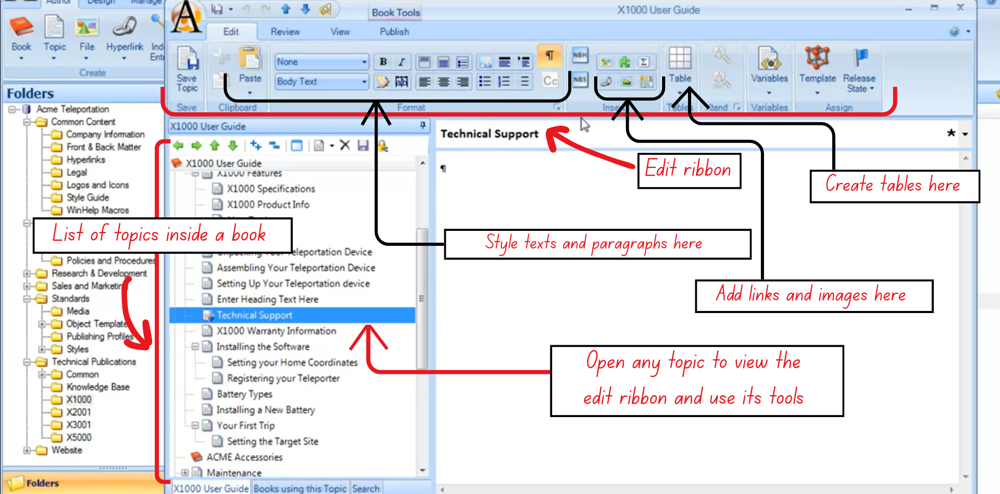

Editing Topics and Headings
Learn how to edit topic content, apply formatting, use review tools, and control heading synchronization across different output formats.
1. Editing Content in Topic Objects
The Edit Ribbon provides all core formatting and content-editing tools used within a topic object.
Figure 9: The Edit and Review functions in Author-it
It allows users to:
- Apply paragraph and character styles
- Insert hyperlinks and graphics
- Draw and format tables
These tools function similarly to a traditional word-processing interface.
Text and View Controls
- Zoom: Adjust the zoom level at the bottom of the screen to improve readability.
- Change Template: You can reassign a topic’s template at any time through the Templates menu.
- Save Regularly: Use the disk icon, Save Topic button, or Ctrl + S.
Styles and Formatting
- Designer-defined styles: The existing paragraph and character styles depend on what the Designer role has configured for the library.
- Paragraph styles: Apply to entire paragraphs using the styles dropdown.
- Character styles: Apply to selected text for emphasis (e.g., bold, strong)
2. Working With Tables
Author-it offers structured table controls to ensure consistency across outputs.
Creating Tables
- Set the insertion point to Body Text before inserting a table.
- Use the table grid selector to choose the number of rows and columns.
Table Layout Ribbon
When a table is selected, a context-sensitive ribbon appears, including options like:
- Resize table width/height
- Apply borders and shading
- Add rows automatically by tabbing out of the last cell
Paragraph Marker Requirement
- Author-it requires a paragraph marker under every table.
- Designers often apply a “hidden” paragraph style (e.g., 1-pt white text) to prevent odd spacing in final outputs.
- If there is a large paragraph marker, it usually means no style was applied — apply Body Text.
3. Review and Troubleshooting Tools
The Review and View ribbons provide essential functions for quality checks and problem resolution.
Review Ribbon
- Spell Check: Run on a single topic or the entire book.
- Find/Replace: Standard search tools.

Figure 10: The components of the View Tab in Author-it
View Ribbon
- Ruler: Useful for table spacing and graphic width adjustments.
- History & Properties: Shows edit history, object details, relationships.
- Locate: Highlights the topic’s location in the folder structure.
Details View (Troubleshooting Mode)
This view shows:
- Base template
- Last modified date/user
- Object code, version, release state
It is particularly useful when:
- A topic has the wrong template
- No template is assigned
Both issues often cause publishing errors. Users can right-click → Apply Template to assign the correct one.
View Ribbon
- Remove: Removes the object from the book only.
- Delete: Entirely removes it from the library.
- When an object becomes orphaned, Author-it prompts the user to decide whether to delete it permanently or not.
Test Publishing (Best Practice)
- Regularly perform small, quick test publications.
- Helps catch template mistakes, style issues, and missing content early.
- Published output may differ from in-library preview because final formatting comes from output templates.
4. Editing and Synchronizing Topic Headings
Each topic includes multiple heading fields for different outputs.
Description vs. Heading Fields
- Description field: Internal object name, used only inside the library.
- Heading fields: Separate fields for Print, Help, and Web outputs.
- They do not need to match each other or the description.
Synchronization Behavior
- An asterisk (*) next to the heading in the editor indicates full synchronization - all headings match the description.
- Changing any one heading breaks synchronization.
Editing Specific Output Headings
Use the icons for:
- Printer → Print heading
- Monitor → Help heading
- Globe → Web heading
Each can be customized independently.
Synchronization Tools
Easily update headings quickly using:
- Synchronize Headings (Print, Help, Web): Makes all output headings identical.
- Synchronize All Headings and Description: Makes description + all three headings identical.